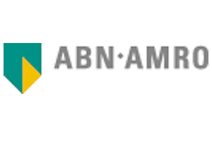

Een boodschap de wereld in slingeren is eenvoudig. Maar gehóórd worden is veel moeilijker.
Een overtuigende boodschap samenstellen is als het componeren van muziek. Als communicatie componist maak ik van jouw verhaal een klinkende boodschap.
Ik ben beschikbaar als voice-over, tekstschrijver en presentator van jouw media- of communicatiecampagne. Ik werk snel en secuur, vanuit mijn eigen studio of op locatie.
Mijn stem, jouw geluid. Nieuwsgierig geworden? Neem contact met me op voor de mogelijkheden :
jorien@commponist.nl / 06 21296919.
Ik heb gewerkt met:
<

>
<
“Jorien begreep al heel snel wat we wilden bereiken met onze radiospot. Ze schreef mee aan de copy en wist precies de juiste toon te vinden bij het inspreken.”Oeds-Jan PostmaLand van Ons